1. Introduction
Some of the most important distinctive features between 3 types of cancer - Pheochromocytoma & Paraganglioma (PCPG) [1], Pancreatic Cancer (PAAD) [2] and Acute Myeloid Leukaemia (LAML) [3] – are presented in this report. These cancers were chosen since their data is roughly balanced with number of samples ranging between 179 and
195. For each cancer type three datasets were analysed: DNA methylation450k profile (methylation dataset) – irregular function of methylation can result in inactivation of tumour-suppressor genes and cause cancer [4]; exon expression profile (exon dataset) – skipping of exons in the encoded transcripts can lead to cancerous mutations [5]; gene expression profile (gene dataset) – normal and cancer cells have different expression profiles [6].
Firstly, the datasets of similar features for the three cancer types were merged. The data was then standardised, and seven different classifiers were evaluated on the full datasets. Best features were then extracted by observing the most important nodes in decision trees and random forests and the biggest weights in linear discriminative classifiers. A second approach using Recursive Feature Elimination (RFE) was also introduced. Classification was then performed with the best features only. The classification results were compared with the full dataset classification and the extracted genes were compared with existing literature. The Python packages matplotlib, seaborn, pandas, NumPy and scikit-learn were used.
2. Data Pre-Processing
The datasets consisted of missing values so these were replaced with the mean of the feature – this type of missing value handling is suitable for linear models and continuous data. Features with no values were completely removed. A label was added to each class. Then, the methylation datasets were stacked for the three cancer types by only keeping the common features. The same was done to the exon and gene datasets. Lastly, the data was standardised using the robust scaler in scikit-learn. This scaler gives better results on data with outliers when compared to zero mean and unit variance scaling. This was also noticed while scoring different classifiers.
The resulting datasets were of shapes 576×396067 for the methylation dataset, 543×239324 for the exon dataset and 543×20532 for the gene dataset.
3. Full Dataset Classification
Initially, seven estimators (three linear and four non-linear) were trained on 67% of the three full datasets (Figure 1). This was done to check if any classification can be done at all; how do the different classifiers perform; how do the different datasets perform. The classifiers were then tested on the remaining 33%.
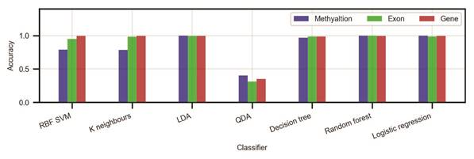
Figure 1. Classifier and dataset comparison on all features.
In general, all datasets show promising results. The gene dataset achieves the best accuracy across the board, closely followed by the exon and methylation datasets. When it comes to classifiers – LDA, decision tree, random forest and logistic regression give solid results every time with an average accuracy of 99.3%.
4. Best Features Selection
The first approach in extracting the best features was by running LDA, logistic regression and linear SVM and observing the features that have the highest weights. Furthermore, classification was done with decision trees and random forests and the features from the top few nodes were taken. In general, the classifiers produced very different results. The figures below present the patterns that were noticed.
By far, LDA produced the worst results. By its nature, LDA tries to project the data in the most discriminative direction. In particular, it tries to maximise the between-class scatter and minimise the within-class scatter. It was found that the datasets consisted of many features that are all zeros (instead of N/A) which were kept after preprocessing. What is more, there were features with only a few values and the rest of them were substituted with the mean of the feature. Unfortunately, these single-valued features are put first by LDA (Figure 2). Therefore, LDA is not good for feature selection.
Some methods for reducing this problem in LDA might be: iteratively removing the best features if their values are a confined in one point; removing features that have many N/As during pre-processing; filling up N/As with a random variable based on a mean and standard deviation rather than with a constant. These methods were not tried since the other classifiers below gave better results.
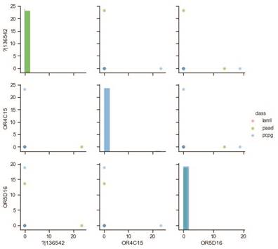
Figure 2. An example of top 3 features from a logistic regression classifier. The features do not provide any useful data.
More sensible results were achieved with logistic regression and linear SVM. After numerous runs, a trend was noticed that both classifiers find features that have a strong expression in only one of the cancers (Figure 3). However, in all cases the features of the three classes were overlapping making reliable classification impossible with a reasonably low number of features. The best features were selected by taking the top 2 features from each class (so 6 features in total).
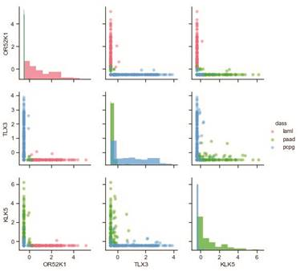
Figure 3. An example of top 3 features from a logistic regression classifier. Each of the three features is mostly expressed in only one class.
Out of all, the decision trees and the random forests found the best features in terms of separability. They picked features which are well separated, with no overlaps, that can be classified with a decision boundary parallel to one of the basis vectors. These features were selected by taking all features with an importance of more than 0.1 from the classifiers (the top 2-5 nodes of the tree).
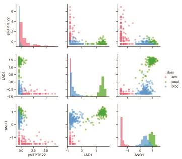
Figure 4. An example of top 3 features from a decision tree. Even with only 1 feature (e.g. ANO1) the tree will be able to reliably classify the cancers. LAD1 and ANO1 also make up a good pair for classification.
The approach discussed so far is based on training an estimator once and observing the top features. However, the top features are different after each training based on the random initial state of the classifier and the random train/test split of the data. This is also due to the fact that out of all features, many have similar properties. As an attempt to minimise this issue, a new algorithm was written based on Recursive Feature Elimination (RFE) [7]. This algorithm trains a model first and filters out the 5% worst features until a certain number of features is reached (3 in this case). The RFE was ran with a logistic regression, decision tree and linear SVM classifiers 20 times, while at each iteration the train/test data was reshuffled, and the initial state of the classifier was reset. To ensure randomness, a new random seed was generated at each run based on the current time. The number of occurrences of each feature throughout the iterations was then counted (Table 1). This approach was used on the gene dataset only because: the gene dataset is best for classification; it is the smallest dataset and it runs this heavier algorithm in a more reasonable time. Interestingly, this time the classifiers found features which occurred multiple times (as opposed to different features at each training like in the previous approach).
|
Logistic regression |
Decision tree |
Linear SVM |
|||||
|
Feature |
Occurrences |
Feature |
Occurrences |
Feature |
Occurrences |
||
|
OR52K1 |
14/20 |
psiTPTE22 |
10/20 |
OR52K1 |
9/20 |
||
|
TLX3 |
11/20 |
LAD1 |
5/20 |
AOX2P |
8/20 |
||
|
KLK5 |
7/20 |
ANO1 |
4/20 |
PNLIPRP1 |
6/20 |
||
Table 1. Number of occurrences of the best features after the RFE algorithm was run 20 times.
5. Reduced Dataset Classification
The reduced datasets were then used to train the same classifiers from section 3, test their accuracy and compare it with the accuracy from the full dataset classification. Among all classifiers for feature selection, logistic regression produced features that result in the worst classification (Figure 5). The decision tree and random forest classifiers produced features that result in comparably good classification. In terms of a dataset, all have comparable results.
When compared to the full dataset classification, the reduced datasets managed to produce very similar accuracy (lower by an average of <1%) with just a few features. The <1% drop in accuracy is due to a low number of outliers that cause overlapping.
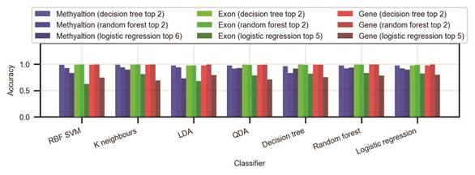
Figure 5. Accuracy of different classifiers on the reduced datasets of top N features. Even though reduction through logistic regression produced the most features, the classification was the worst.
With the RFE approach, the decision tree reduced dataset settled on an average accuracy of >99%, the SVM reduced dataset on 92%, and the logistic regression reduced dataset on 81%.
6. Comparison with Other Literature
One of the top features (cg05973398) – found by a decision tree from the methylation dataset with an importance of 48% - corresponds to the RUNX1 gene. Figure 6 in the appendix shows that the methylation profile of this gene is very distinctive for the LAML cancer. Numerous papers [8], [9] have agreed that mutations in the RUNX1 cause predisposition to LAML. The first approach for feature selection found 25 other genes, but none of them were recognised by other literature to be related to cancer.
The second approach (RFE) found 8 genes. From them the TLX3, KLK5, LAD1, ANO1 and PNLIPRP1 genes have been classified as related to cancer by the Human Protein Atlas [10]. According to this source, the TLX3 (T-cell leukaemia homeobox) gene is associated with T-cell acute lymphoblastic leukaemia. LAD1, ANO1 and PNLIPRP1 are known to be related to pancreatic cancer (strong expression of these can be seen in Figure 4 for this cancer).
7. Conclusion
Two approaches for best features extraction were proposed. The first one outputted noisy results – that is, the same features would not come up multiple times after rerunning the algorithm. The features were good for classification between the three classes, but out of all only one of them was recognised to be related to cancer. The second approach significantly reduced the noisiness problem and the features that were selected were much more consistent between multiple runs. Apart from being good for classification, many of these features were also recognised by external sources to be related to some of the three cancers that are reviewed in this work.
When comparing the three datasets, all of them gave comparable results. However, the gene dataset had the advantage of being smaller and more convenient to work with. For feature selection, LDA produced the worst results. The tree based algorithms found features that are best separated and produce classification accuracies of over 99% with just two features. Logistic regression and linear SVM outputted features that have a strong expression in just one class but are worse for classification (due to overlapping).
Although the algorithms found best features that can be used for distinguishing between the different cancers, this does not necessarily mean that they are related to that cancer. The reason of these features being more apparent in one class than in the others is likely to be because they were also collected from different types of cells so the classifiers may actually be classifying different types of cells rather than cancers. As a suggestion for improvement, better results will probably be achieved by running the feature selectors with RFE on two datasets from the same organ: one dataset containing data from normal cells, the other containing data from cancer cells. This way, the expression difference due to the data being from different cell types will be removed, and the only difference will be due to the cancer.
8. References
[1] The Cancer Genome Atlas, “cohort: TCGA Pheochromocytoma.” [Online]. Available:
https://xenabrowser.net/datapages/?cohort=TCGA Pheochromocytoma & Paraganglioma (PCPG)&removeHub=https://xena.treehouse.gi.ucsc.edu:443.
[2] The Cancer Genome Atlas, “cohort: TCGA Pancreatic Cancer (PAAD).” [Online]. Available: https://xenabrowser.net/datapages/?cohort=TCGA Pancreatic Cancer
(PAAD)&removeHub=https://xena.treehouse.gi.ucsc.edu:443.
[3] The Cancer Genome Atlas, “cohort: TCGA Acute Myeloid Leukemia (LAML).” [Online]. Available: https://xenabrowser.net/datapages/?cohort=TCGA Acute Myeloid Leukemia
(LAML)&removeHub=https://xena.treehouse.gi.ucsc.edu:443.
[4] M. Kulis and M. Esteller, “DNA Methylation and Cancer,” in Advances in genetics, vol. 70, 2010, pp. 27–56.
[5] M. Schutte et al., “Exon expression arrays as a tool to identify new cancer genes,” PLoS One, vol. 3, no. 8, p. e3007, Aug. 2008.
[6] M. Hu and K. Polyak, “Serial analysis of gene expression,” Nat. Protoc., vol. 1, no. 4, pp. 1743–1760, Oct. 2006.
[7] I. Guyon+, J. Weston+, S. Barnhill, and V. Vapnik, “Gene Selection for Cancer Classification using Support Vector Machines.”
[8] K. Ito, N. A. Speck, and D. C. Bellissimo, “RUNX1 Mutations in Inherited and Sporadic Leukemia,” Front. Cell Dev. Biol. | www.frontiersin.org, vol. 5, p. 111, 2017.
[9] J. M. Scandura, P. Boccuni, J. Cammenga, and S. D. Nimer, “Transcription factor fusions in acute leukemia: Variations on a theme,” Oncogene, vol. 21, no. 21 REV. ISS. 2, pp. 3422–3444, 2002.
[10] C. Lindskog, “The Human Protein Atlas – an important resource for basic and clinical research,” Expert Rev. Proteomics, vol. 13, no. 7, pp. 627–629, Jul. 2016.
9. Appendix
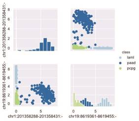
Figure 6. Best 2 features from the exon dataset using decision trees.
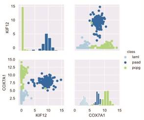
Figure 7. Best 2 features from the gene dataset using decision trees.

Figure 8. Best 2 features from the methylation dataset using decision trees.
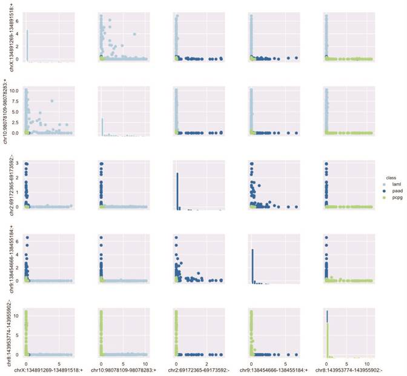
Figure 9. Best 5 features from the exon dataset using logistic regression.
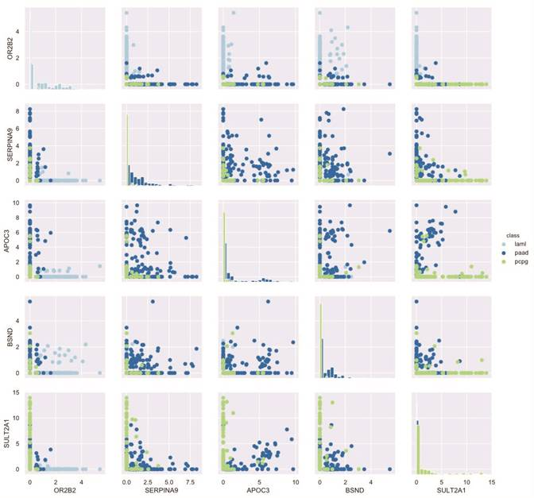
Figure 10. Best 5 features from the gene dataset using logistic regression.
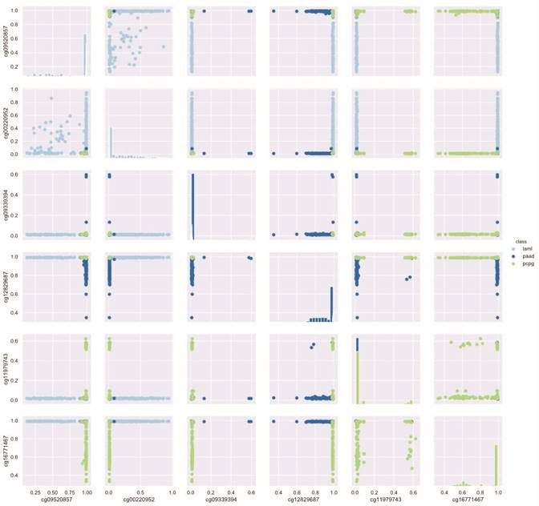
Figure 11. Best 6 features from the methylation dataset using logistic regression.
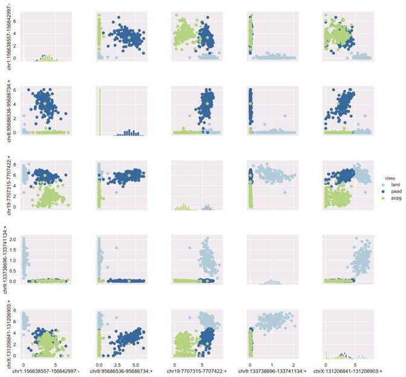
Figure 12. Best 5 features from the exon dataset using random forest.
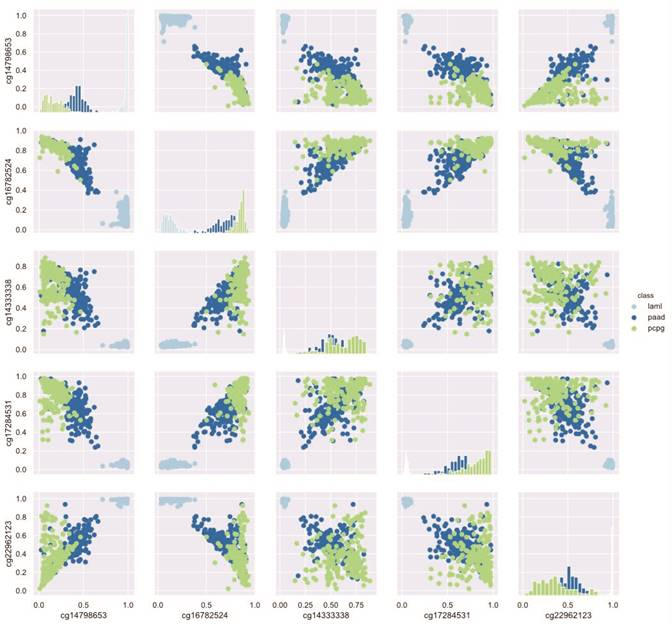
Figure 13. Best 5 features from the methylation dataset using random forest.
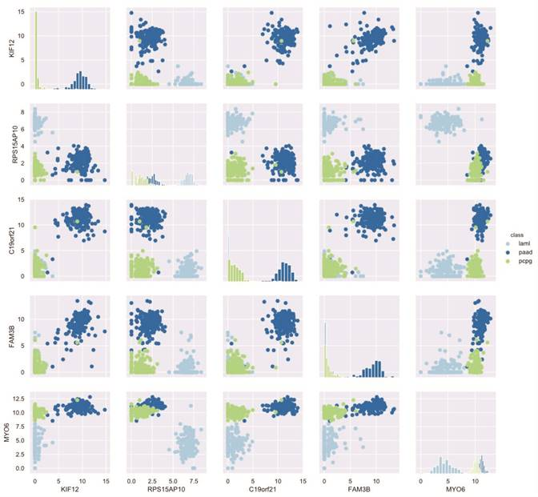
Figure 14. Best 5 features from the gene dataset using random forest.